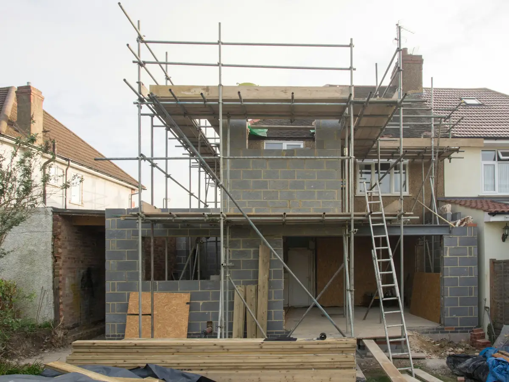
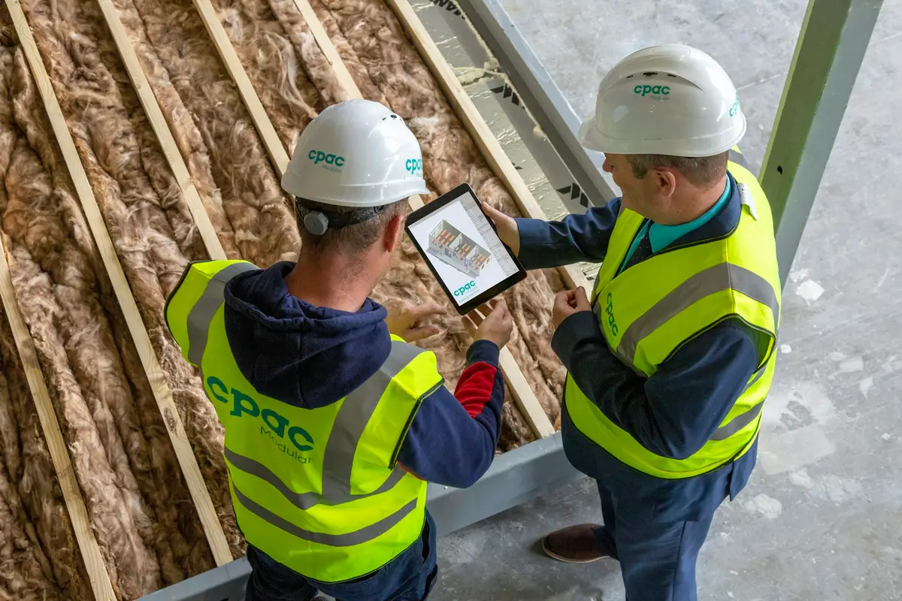
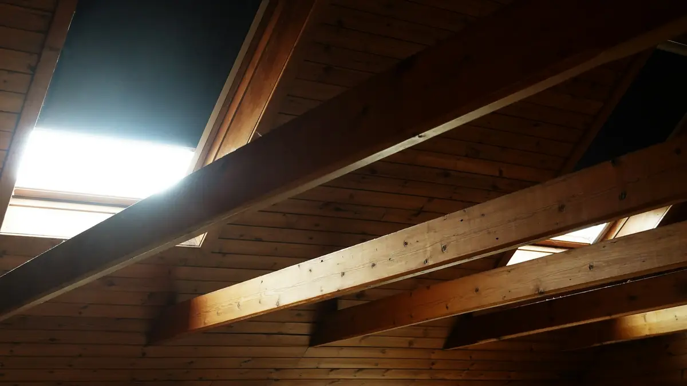

Baubegleitung und Wärmebrückenberechnung
Energieeffizientes Bauen und Sanieren stellt hohe fachliche Anforderungen an alle Beteiligten. Die energetische Baubegleitung sichert, dass die Ziele erreicht und gegenüber Fördergebern nachgewiesen werden. Die Wärmebrückenberechnung holt aus der Bausubstanz die bessere Effizienzklasse heraus.



Was die Baubegleitung leistet, und was nicht.
Um Missverständnisse gleich auszuräumen: Eine Baubegleitung umfasst keine Bauplanung, keine Bauantragstellung, keine Statik und keine Bauleitung. Wir holen keine Angebote ein und beschaffen kein Material. Das ist Aufgabe von Generalunternehmern, Fachhandwerkern und anderen Fachleuten. Vor allem muss der Energieeffizienz-Experte unabhängig bleiben und darf kein wirtschaftliches Interesse an der Bauausführung haben.
Die Baubegleitung stellt sicher, dass die energetischen Ziele des Vorhabens erreicht werden: Wir überwachen die ordnungsgemäße Ausführung, dokumentieren die Übereinstimmung mit der Fachplanung und fassen alles in einer Hausakte zusammen. Je nach Stand der Vorplanung geben wir Empfehlungen und Mindestvorgaben für Bauteile, Anschlussdetails und Anlagentechnik.
Im Regelbetrieb sind wir mindestens zweimal pro Woche auf der Baustelle, je nach Fortschritt öfter. Nach Abschluss bestätigen wir gegenüber Förder- und Kreditgebern, dass die Ziele erreicht wurden, und können das bei einer Prüfung nachweisen.
Förderung der Baubegleitung
Bei Einzelmaßnahmen an der Gebäudehülle, an der Anlagentechnik (außer Heizung) und an Wärmeerzeugern bei Gebäudenetzen: 50 % der förderfähigen Ausgaben, gedeckelt auf 5.000 € bei Ein-/Zweifamilienhäusern, 2.000 € je Wohneinheit bei Mehrfamilienhäusern, insgesamt höchstens 20.000 €.
Bei der Sanierung zum Effizienzhaus 85 oder besser: 50 % der förderfähigen Ausgaben, gedeckelt auf 10.000 € bei Ein-/Zweifamilienhäusern, 4.000 € je Wohneinheit ab drei Wohneinheiten (auch WEG), insgesamt höchstens 40.000 €.
Über die BEG gibt es keinen Zuschuss, die Kosten können aber über die KfW-Kredite 296, 297, 298 und 300 mitfinanziert werden. Die Einbindung eines Energieeffizienz-Experten ist dort ab Antragstellung verpflichtend.
Stand März 2025, maßgebend sind die aktuellen Vorgaben von BAFA und KfW.
Wärmebrückenberechnung und -simulation
Fensteranschlüsse, Deckenanschlüsse, Gebäudeecken, Rollladenkästen: Mit einer Berechnung der Wärmebrücken lässt sich eine optimale Ausführung an diesen Stellen nachweisen. Beim Neubau wie bei der Sanierung zum Effizienzhaus ist das oft entscheidend, um die angestrebte Klasse (EH 70, EH 55, EH 40) überhaupt zu erreichen. Je niedriger die Klasse, desto höher der Tilgungszuschuss und desto niedriger die Heizkosten.
Es gibt verschiedene Qualitätsstufen, vom bildhaften Vergleich mit Regeldetails bis zur thermischen Simulation mit speziellen Programmen. Je mehr Aufwand, desto genauer die Berechnung und desto niedriger der Zuschlag. Wir führen alle Arten von Nachweisen durch, auch Simulationen für KfW-40- und Nullenergiehäuser.
Warum eine Berechnung die Effizienz verbessert
Die Berechnung ändert nichts an der Bausubstanz. Aber im gesetzlichen Nachweis muss ein pauschaler Strafzuschlag für Wärmebrücken eingerechnet werden, wenn sie nicht gesondert nachgewiesen werden. Und dieser Zuschlag wiegt umso schwerer, je besser die Hülle gedämmt ist.
Beispiel: Die Gebäudehülle erreicht mit viel Dämmung einen mittleren U-Wert von 0,20 W/m²K. Ohne Nachweis kommen pauschal 0,10 W/m²K dazu, also 50 % Zuschlag. Mit Nachweis auf 0,03 W/m²K sind es nur noch 15 %. Ergebnis: bessere Klasse und höhere Förderung, oder dünnere Dämmung bei gleicher Klasse.
Zuschlag: 50 % auf den mühsam erreichten Wert. Angaben in W/m²K.
Baubegleitung oder Wärmebrückennachweis?
Schicken Sie uns Ihr Vorhaben. Wir sagen, welche Förderung greift und welche Nachweisstufe sinnvoll ist.